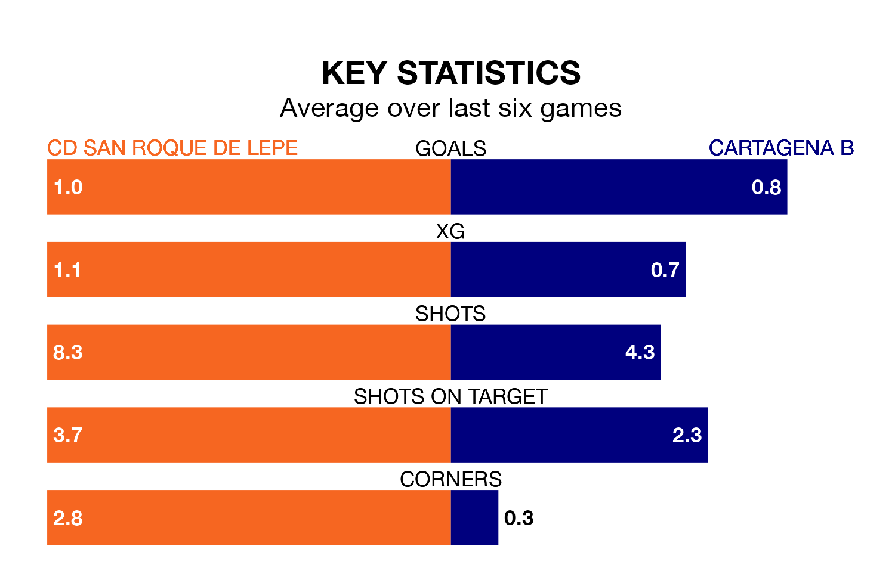

Sunday's match at the Estadio Municipal Ciudad de Lepe sees the league's two bottom sides face each other, as CD San Roque de Lepe host rock-bottom Cartagena B.
San Roque de Lepe have picked up 14 points from their first 14 Segunda División RFEF Group 4 games, with three wins and five draws.
That is four points more than Cartagena B have collected, having won two and drawn four.
San Roque de Lepe are in disappointing form in Segunda División RFEF Group 4, with two wins and four losses from their last six games.
With a win and two draws over that period, Cartagena B's form is slightly worse – they have taken five points from 18, compared to the hosts' six.
With 13 goals in 17 games so far this season, the away side are scoring at below the league average rate with 0.8 goals per game. And they are conceding more than average, letting in 28 goals at a rate of 1.6 per game.
San Roque de Lepe are also below average scorers, with 0.8 goals per game, compared to a league average of 1.1. They have conceded 1.1 goals per game.
San Roque de Lepe's last match was on January 7, a 1-0 loss against Orihuela CF.
Cartagena B drew 0-0 with Racing Cartagena MM last time out, also on January 7.
Updated: 10:50, 10/01/24